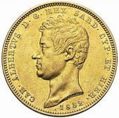

Si lanciano due monete. Ogni giocatore scommette su un esito:
2 Teste, 2 Croci oppure 1 Testa e 1 Croce.
Con il passare dei lanci, le frequenze si avvicinano alle probabilità teoriche:
25%, 25% e 50%. Quanti pensano che i tre esiti siano equiprobabili?

vince
scommette su 2 Croci
0
0% · 0 lanci
vince
scommette su 2 Teste
0
0% · 0 lanci
vince
scommette su 1 Testa e 1 Croce
0
0% · 0 lanci
N =
Andamento delle frequenze
Percentuale di vittorie
Confronto con la teoria
2 Croci (25%)
2 Teste (25%)
1 Testa e 1 Croce (50%)
Nota didattica. L'esito "1 Testa e 1 Croce" ha probabilità 1/2 (due combinazioni su quattro: TC e CT), mentre "2 Teste" e "2 Croci" hanno probabilità 1/4 ciascuno. È un classico esempio di misconcetto: i tre esiti non sono equiprobabili.